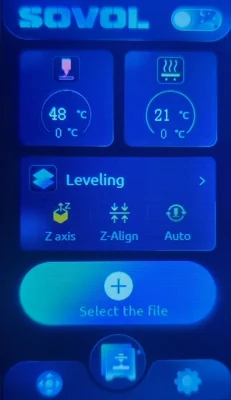
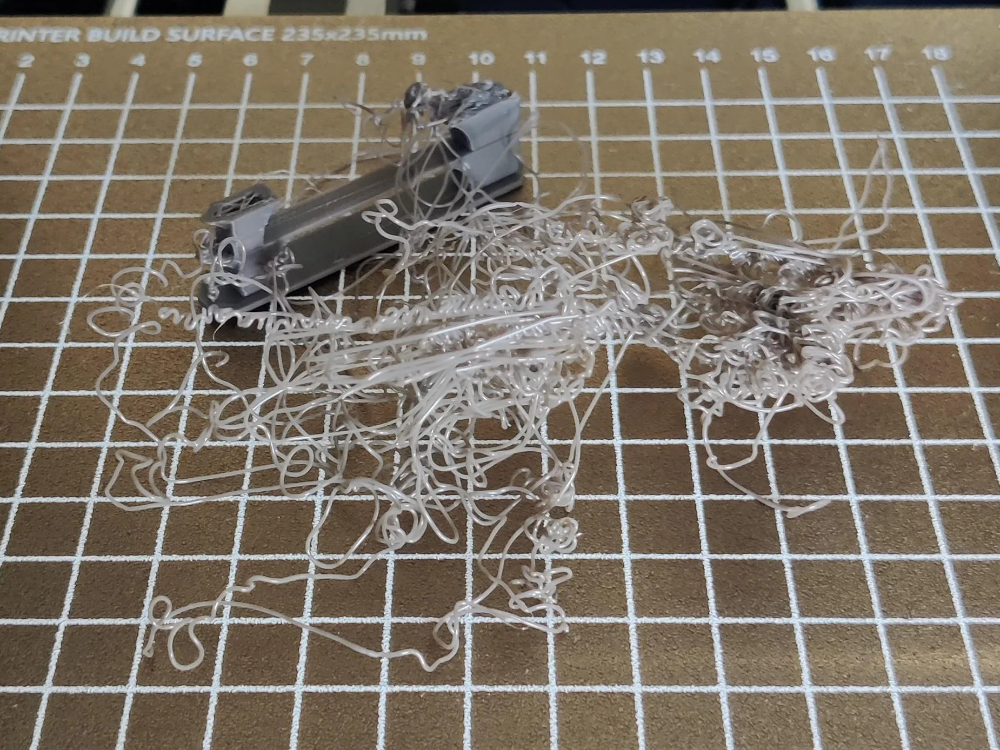
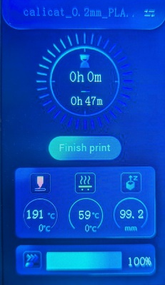

Make your first print!
Start the print
Now all that's left is to select the G-code file and start the print!
On the LCD's main menu, tap the large + Select the file button, tap the calicat... G-code file, and then tap Print.

The printer will heat up the nozzle and heated bed to 210°C and the heated bed to 60°C. These are the temperatures configured in PrusaSlicer for PLA.
Info
If the printer displays different temperatures, that usually means the wrong filament / material preset was selected in your slicer (PrusaSlicer).
In this case, tap the Stop button to stop the print, re-slice the model file in PrusaSlicer, save the new G-code file to the microSD card, and try your print again.
Once the nozzle and heated bed reach their configured temperatures, the LCD will show an animation and the printer will start working!
The printer will do several things each time it starts a print:
- The extruder will home (move to the furthest left, back, and down position) to re-establish its coordinate system
- The printer will draw a line of filament, either on the left or front side of the print bed, called a purge line. It is normal for some filament to ooze out of the nozzle before it starts moving. Creating a purge line before working on a model helps the printer to wipe off this extra filament so it doesn't get attached to the model.
- For most models, the printer will draw a border around the area where it will start printing the model. This is called a skirt. The skirt is a good visual indicator of the size of the model to be printed. The skirt is configurable within PrusaSlicer when preparing a model.
Info
If the skirt is a different size than you expected, it might mean you have selected a different file than you meant or that the print file isn't working properly.
In this case, tap the Stop button to stop the print, re-slice the model file in PrusaSlicer, save the new G-code file to the microSD card, and try your print again.
- Finally, the printer will start building your model!
Monitor the printer
With any luck, you'll start to recognize Cali Cat while it's being printed!
Sometimes, a print doesn't go as expected so it's a good idea to keep an eye on the printer while it works. For example, the model being printed can come loose from the build plate or the printer doesn't build the model as you expected. If you don't stop the printer when this happens, you might be visited by the spaghetti monster!

(Picture from /u/aargvark on Reddit)
Info
You can stop a print in progress using the Stop button on the LCD.
If the printer needs to be stopped quickly, turn off the power switch.
After patiently waiting for about an hour, the printer will finish printing Cali Cat!
Tap Finish print on the LCD to return to the main menu.

Remove the finished print
When the printer finishes, I recommend waiting for the print bed to cool down 10 to 20 degrees Celsius. This helps prevent the finished print from deforming from the bed heat when it is removed from the build plate.
The purge line can be removed with the printer's included scraper.

To remove a finished print from the build plate, grip the build plate handles with your fingers and gently lift. Often times, a finished print will simply pop off the build plate.

If a model has a larger surface area on the print bed (such as something low and flat), you can lift the build plate off of the print bed and gently bend the build plate inward, curving the surface off of the finished print.
After you've removed your finished print, place the build plate back on the print bed with the notches aligned with the screws on the back end.
Remove any remaining filament from the print bed (e.g. the skirt).

Congratulations on your first 3D print!